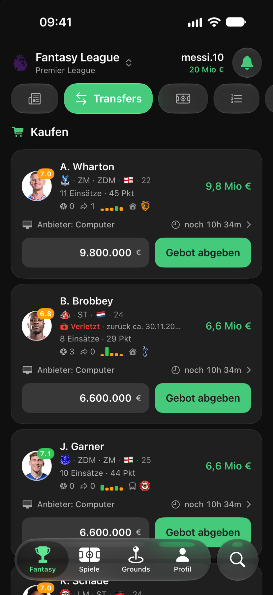
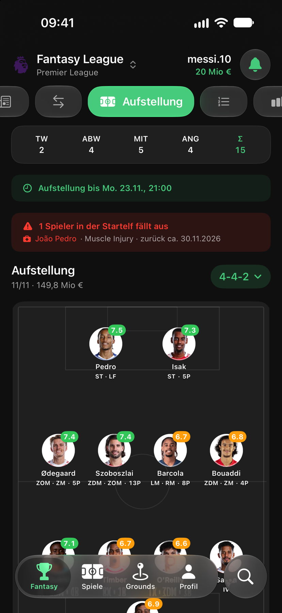
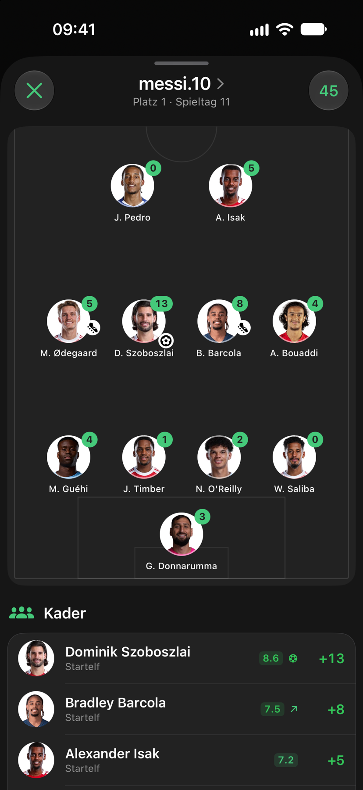
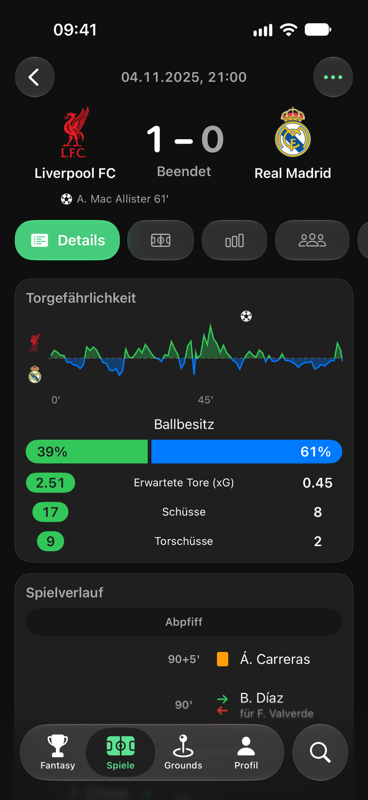
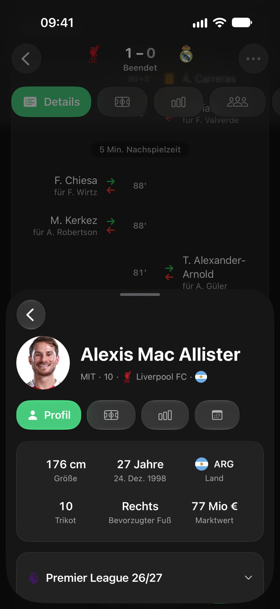
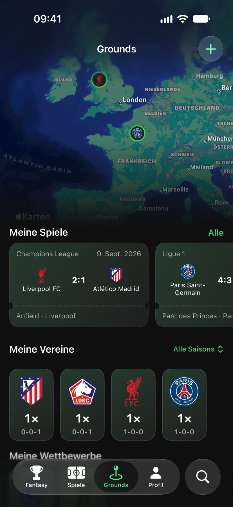

Einladen
Erstelle eine Liga und hol deine Freunde per Einladungscode dazu.
Gründet eure eigene Liga, handelt um Spieler und stellt eure Elf auf. Verfolgt jedes Spiel live, stöbert in Spieler- und Vereinsstatistiken und führt Buch über die Stadien, in denen ihr wart.


Einladung teilen, Kader aufbauen, den nächsten Spieltag verfolgen. Alles, was ihr für eure eigene Manager-Liga braucht.
Erstelle eine Liga und hol deine Freunde per Einladungscode dazu.
Verpflichte Spieler, plane dein Budget und entscheide, wer in deiner Elf steht.
Sammle Punkte aus echten Partien und verfolge, wer in eurer Liga vorne liegt.
Biete auf Spieler, verkaufe aus deinem Kader oder mache einem Mitspieler ein direktes Angebot. Tore, Vorlagen, Notenverlauf und Verletzungsstatus zeigen dir, wer sein Geld wert ist.
Wähle deine Formation und besetze die elf Positionen vor dem Anpfiff. Fällt ein Spieler aus deiner Startelf aus, zeigt dir die App das – samt voraussichtlicher Rückkehr.
Tore, Vorlagen, Karten und Noten aus echten Spielen werden zu Punkten. Die Tabelle zeigt Platzwechsel und Spieltagssiege. Ein Tipp auf einen Manager zeigt seine Aufstellung und Punkte am Spieltag.

Matchday XI begleitet auch den echten Fußball: Live-Spiele, Detailseiten für Spieler, Vereine und Wettbewerbe und ein Tagebuch der Stadien, in denen du warst.
Verfolge Ergebnisse und Torschützen live, sortiert nach Spieltag. Das Match Center zeigt Angriffsdruck, Ballbesitz, erwartete Tore, beide Aufstellungen mit Ereignissen und die Spielernoten.

Spielerseiten zeigen die ganze Saison mit Saisonfilter, alle Statistik-Bereiche, den Notenverlauf, eine Schusskarte mit Ø-Position und Verletzungen mit voraussichtlicher Rückkehr. Auch Vereine und Wettbewerbe haben eigene Seiten.

Führe ein privates Tagebuch der Spiele, die du im Stadion gesehen hast. Sammle Stadien auf der Karte, sieh deine Bilanz nach Verein und Wettbewerb und füge jedem Besuch Fotos hinzu.

Eine Person erstellt die Liga und teilt den Einladungscode. Die anderen treten mit ihrem Konto bei. Je nach Einstellung muss ein Admin den Beitritt erst freigeben.
Ja. Beim Erstellen der Liga legst du die verfügbaren Liga- und Wertungseinstellungen fest. Welche Regeln für euch gelten, könnt ihr in der Liga nachsehen.
Die Wertung basiert auf realen Fußballspielen. Spielereignisse und Bewertungen werden nach den Regeln eurer Liga in Punkte umgerechnet. Daten können zeitversetzt eintreffen oder später korrigiert werden.
Dein privates Stadion-Tagebuch. Trag die Spiele ein, die du im Stadion gesehen hast, sammle Stadien auf der Karte und sieh deine Bilanz nach Verein und Wettbewerb. Besuche und Fotos sieht nur dein Konto.
Nur wenn du es erlaubst. Für „Ich bin im Stadion“ und „In deiner Nähe“ wird dein Standort auf dem Gerät mit dem Stadion verglichen und weder gespeichert noch an uns gesendet. „Besuchte Spiele finden“ vergleicht Aufnahmezeit und -ort deiner Fotos auf dem Gerät; die Fotos werden nicht hochgeladen. Details stehen in der Datenschutzerklärung.
Für Anmeldung, Gebote, Ligaänderungen und aktuelle Spielstände brauchst du eine Verbindung. Bereits geladene Inhalte können teilweise auch ohne Netz verfügbar sein.
Ja. Beide Freigaben sind freiwillig und zunächst ausgeschaltet. Du findest die getrennten Schalter unter Profil → Datenschutz und kannst sie dort jederzeit widerrufen.
Ab sofort. Matchday XI ist im App Store für iPhone und iPad verfügbar.
Matchday XI ist jetzt für iPhone und iPad verfügbar. Fragen? Wir helfen dir gerne per E-Mail.